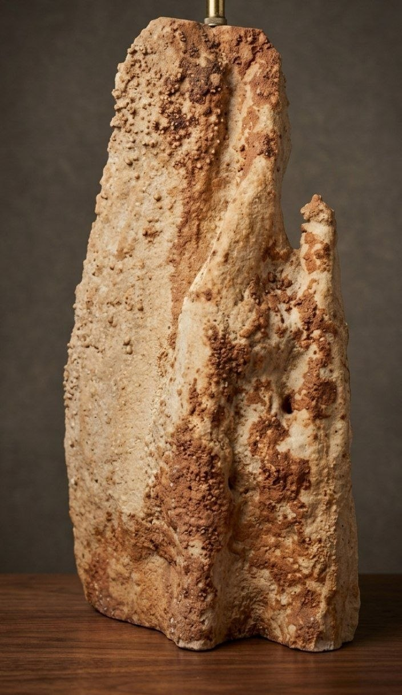

Registro fotográfico
La pieza
en detalle
Añadir foto · Vista frontal
Vista 1 · El Gigante de Tolox
Añadir foto · Vista lateral
Vista 2 · El Gigante de Tolox

Espeleotema kárstico hallado en una cueva de la Sierra de las Nieves, Tolox. Una formación natural de carbonato cálcico que creció gota a gota durante milenios en las entrañas de la montaña.
Una estalagmita que creció en silencio durante milenios en una cueva de Tolox, Sierra de las Nieves. Escucha su historia de calizas, agua y tiempo.
Formación natural de carbonato cálcico (calcita) crecida en el interior de una cueva de la Sierra de las Nieves. El agua rica en CO₂ disolvió la caliza jurásica durante milenios y la precipitó gota a gota dentro de la cueva, construyendo esta columna de forma subantropomorfa. Las manchas rojizas son óxidos de hierro disueltos en el agua durante su filtración. No se detectan indicios de talla humana prehistórica.
Esta pieza procede de una cueva del Parque Nacional Sierra de las Nieves (espacio protegido). Contacta con el Ayuntamiento de Tolox (952 487 097), la Delegación de Cultura de la Junta de Andalucía en Málaga, o el Museo Arqueológico de Málaga para una valoración presencial. No devuelvas la pieza a la cueva hasta recibir orientación profesional.